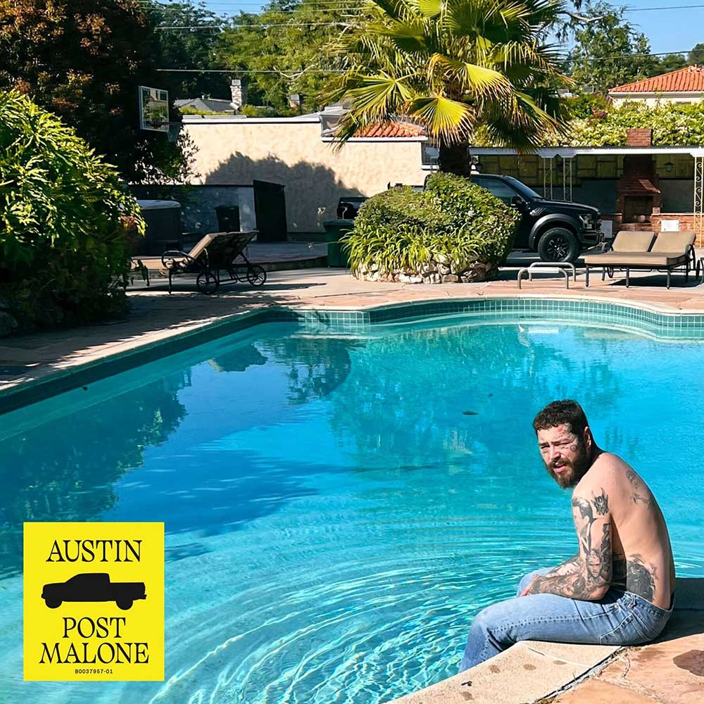

About the record
Austin is Post Malone's fifth studio album, released July 28, 2023 — his first self-titled project, named after his own given name. It trades the trap-leaning sound of his earlier records for something more acoustic and guitar-driven, and it's his first album with no featured artists. Across seventeen tracks he works through fame, addiction, fatherhood, and relationships that didn't survive any of it.
The route
Pick a stop.